Week 6
Part I: Central Park Zoo Visit
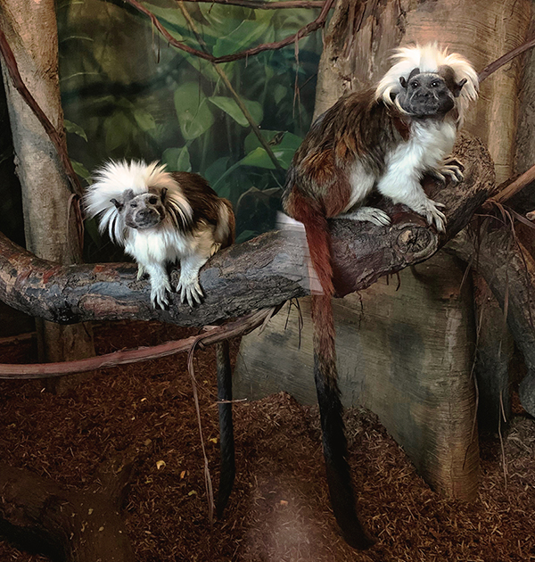
During my visit at the Central Park Zoo, I decided to observe the Cotton-top Tamarin. The Cotton-Top Tamarins are small New World Monkey that weigh less than 0.5kg. The Cotton-Top Tamarin are currently classified as "critically endangered" by the IUCN. The Cotton-Top Tamarins have a very clear dominance hierarchy: only the dominant pairs breed. They also displays a high level of cooperative care, as well as altruistic and spiteful behaviours. In addition, studies show that there exists grammatical structure in terms of their communication.
Ethogram on the Cotton-Top Tamarin
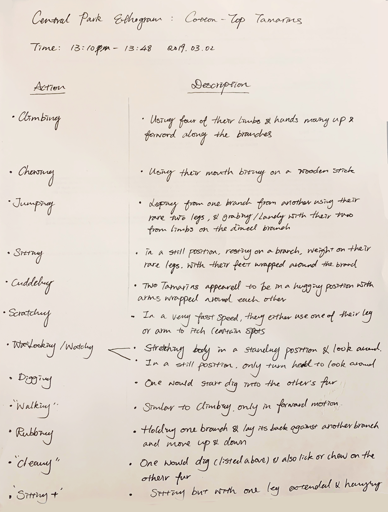
Homoculus Diagram
During my observation, I noticed the tamarins uses their hands, feet and mouth very often. I'm assuming their tails are used for balance purposes, however it is hard to confirm from this observation solely. Below is the Homoculus Diagram I created based on this specific observation.
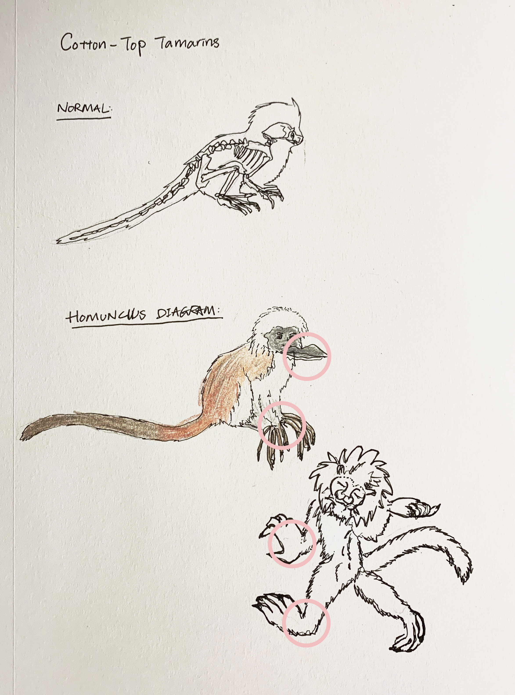
I was lucky enough to witness the train session while I was at the zoo. Here is a short clip of how the Cotton-Top Tamarins intereact with thier keeper, and how the keeper trains them with treats.
Part II: Local Pet Store, Animal Shelter and Hospital visit
During this observation my partner Yating and I visted a pet store: Petco, two animal shelter:Animal Haven and Best Friends Pet Adoption Center, and one animal hospital :Tribeca Soho Animal Hospital.
At the pet store we found many items that are very anthropomorphic. Such as the rainboots, the dress, and the fake neon fish. More importantly those items are designed for human needs instead of the animals'. It's obvious that dogs do not wear rainboots in thier nature habitat, the main reason why it is invented is for the ease of the dog owners. Having had clean the floor and carpets after taking dogs out on a walk during a damp or snowy day, I understand the pain. However, these product didn't really take consideration of the animals' needs.
However, there are some items are enriching for the animals. For example, the dripper for the lizard, the fake cactus, the rocks and plants for the fish, and the toys for the birds to play with. On the other hand, we did notice that some animals are putting into very small spaces as shown below. A lot of the small birds are put into one big cage, where as the big birds sometimes has their own cage. Similarly, Guinea pigs share a big cage and hamsters have thier own cage. These settlements are mostly decided based on animals habits and preference. Hamsters are more territorial and would fight when putting into one cage, where as guinea pigs preferr companies. Nonetheless, there are fish for sell that's packed in single containers for the convinience of their customers.
Petco also offers grooming services where people can bring their pets to the store and have the groomer help them with shaving and cleaning the pets. Petco do have an open area where the customers can watch their pets being groomed. We stooded there and watched for a while. There are leashes connected to the animals to help them stay in place. For the small dog we watched, there is a table where it stand, it matches the height to the groomer's convinience. In the room there is a water bowl for the animal, after they are done grooming. There are couple different types of shavers being used based on the area that the groomer is working on.
 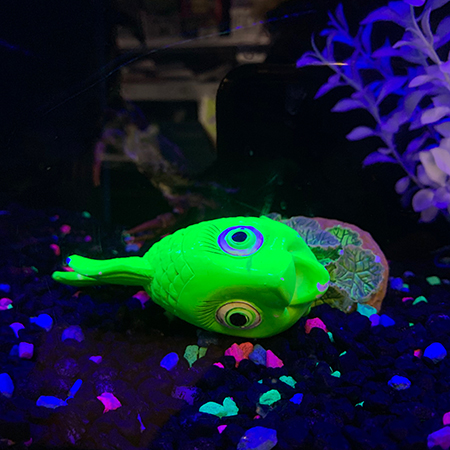
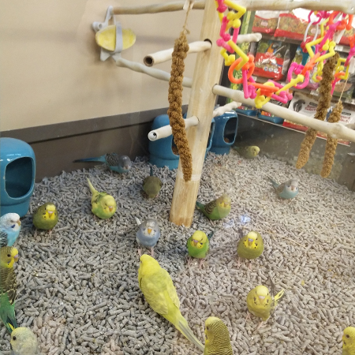
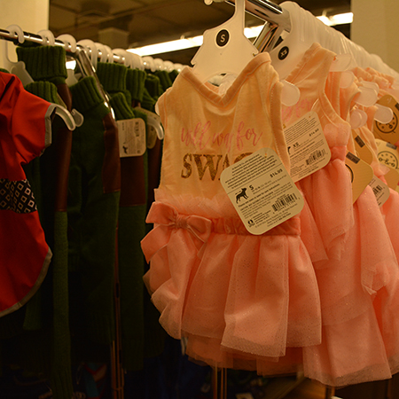
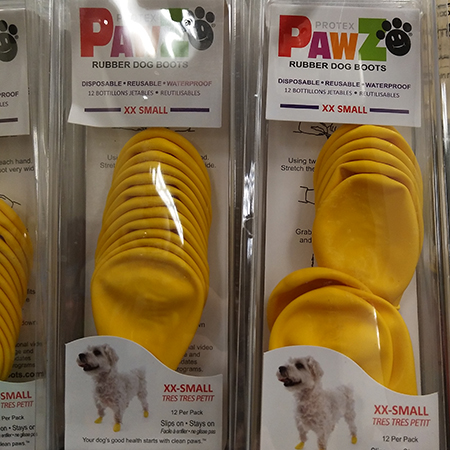
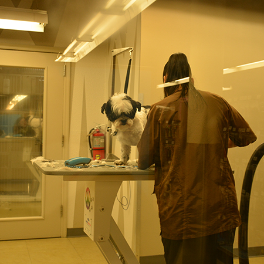
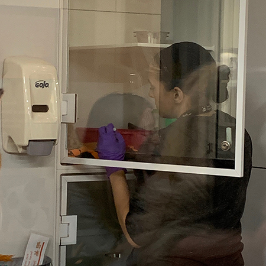
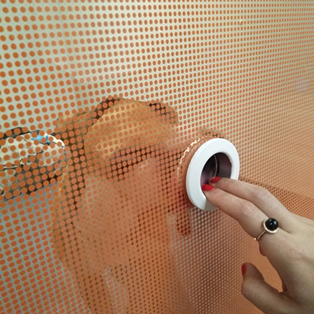
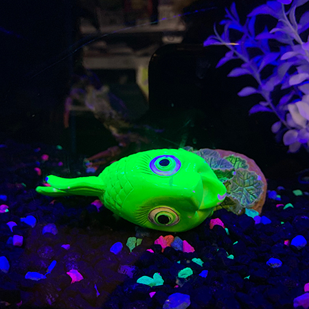
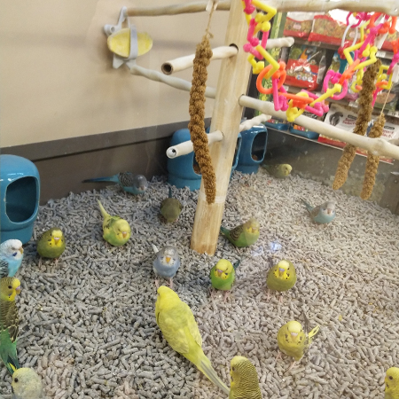
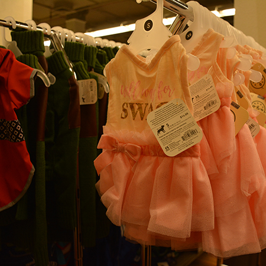
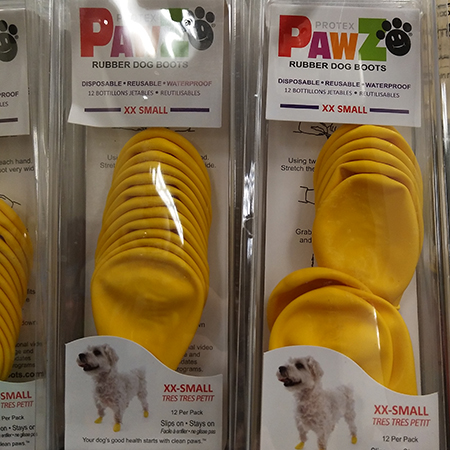
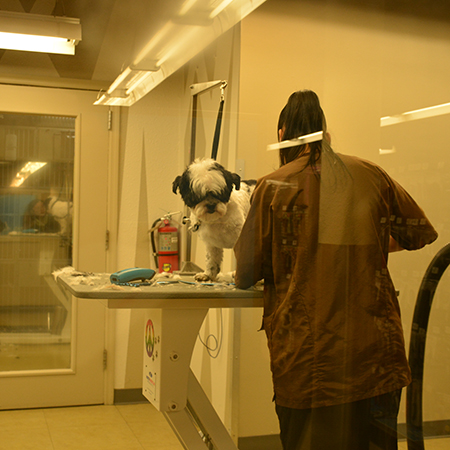
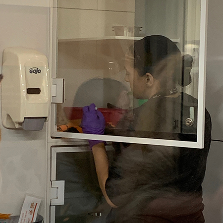
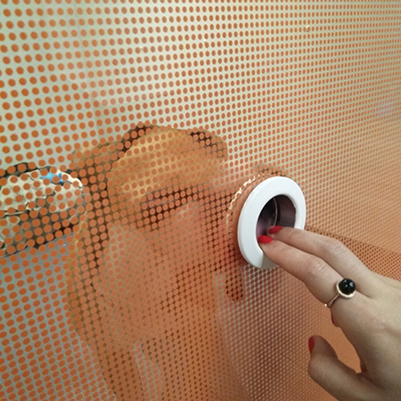
At the shelters, things were very different. At the Animal Haven, we didn't get to talk to any experts, the entire place is very private. Visitors don't get to see all the animal. There are one dog and two cats where visitors have access to.